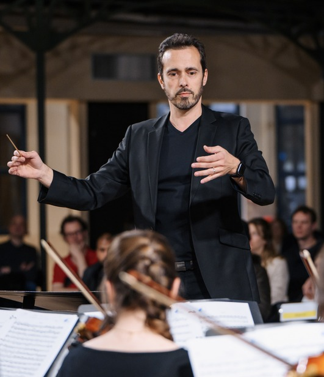
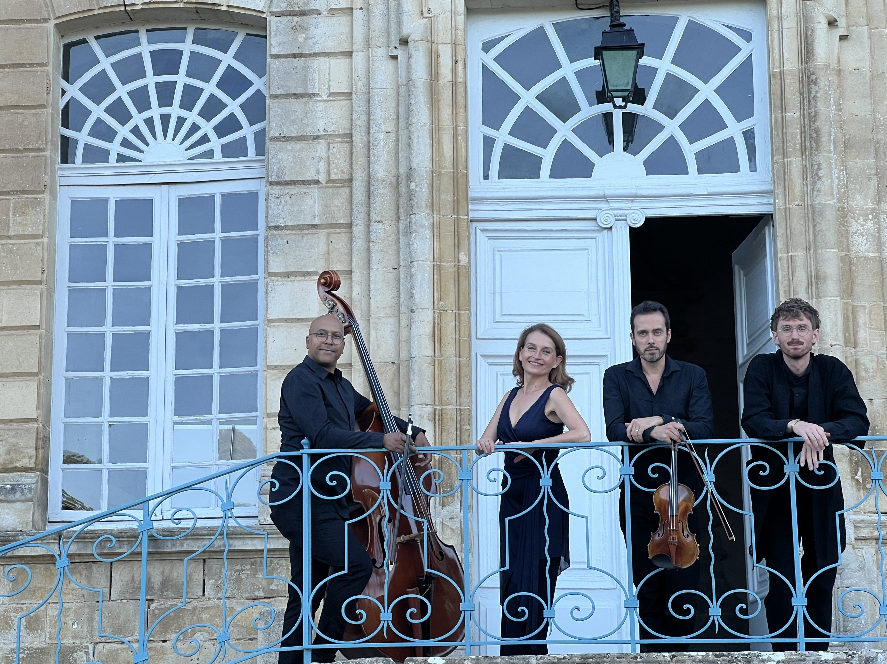
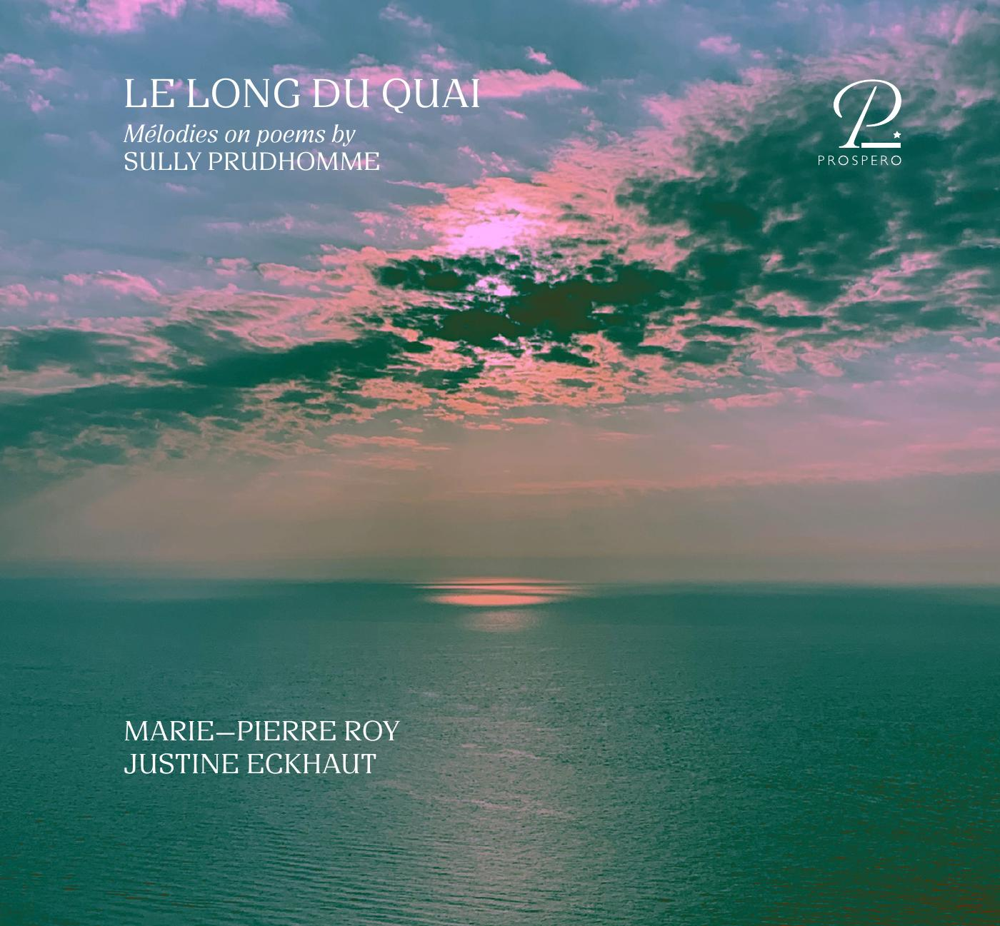

Matthieu
Roy
Musique pour l’image, le spectacle vivant et les formations instrumentales.
Découvrir les projets

Échos d’atelier
Avec Virginie Seghers. Matthieu Roy est compositeur et arrangeur d’une grande partie des chansons de l’album, et participe également au projet comme violoniste.
Un projet où l’écriture, l’arrangement et l’interprétation se rencontrent.
Découvrir le projetSolitudes
Cycle de cinq mélodies pour soprano et piano, composé pour Marie-Pierre Roy et Justine Eckhaut et publié sur le disque Le Long du Quai.
Une œuvre qui donne une place centrale à l’écriture vocale.
Découvrir Solitudes
Quelques projets
Composition, orchestration et arrangement, au fil de projets de cinéma, de spectacle vivant et de musique vocale.

Écrire, orchestrer, faire entendre.
Compositeur, orchestrateur, arrangeur et violoniste, Matthieu Roy travaille de l’écriture originale à l’adaptation pour l’orchestre, la voix, la scène et l’image.
Voir les partitionsComposition
Musique originale pour le cinéma, le ciné-concert, le spectacle vivant, l’orchestre, la musique de chambre et la voix.
Voir le catalogueOrchestration
Orchestrations, arrangements et transcriptions pour cinéma, théâtre, comédie musicale, chanson, orchestre et ensembles.
Voir le catalogueLe site privilégie un contact direct par email : simple, durable et sans formulaire externe.